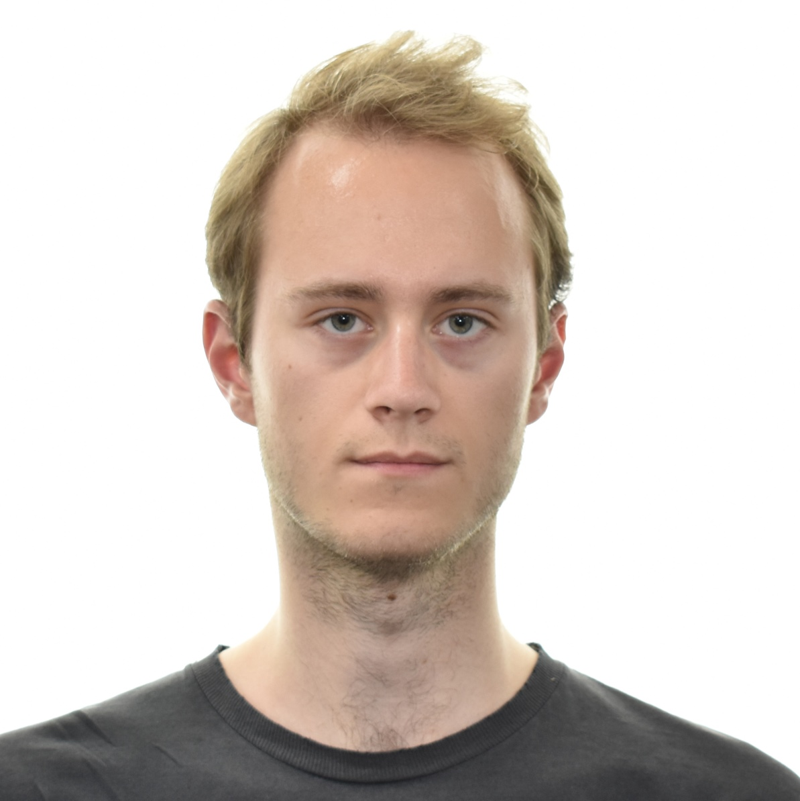

Mathematical Physics at the University of Edinburgh.
Currently on exchange at UC Berkeley.
M.J.Looijmans [at] sms.ed.ac.uk
MJ.Looijmans [at] berkeley.edu

Profile
I have a keen interest in cosmology, neutrino physics, quantum computing and artificial intelligence.
I am currently working on building a career where I can do research in these fields and ideally learn more about the interplay of these fields.
As a pastime, I am also interested in space exploration.
Click here for my GitHub
Education
2022 - 2023, The University of California at Berkeley, Physics, EAP Exchange Program
2019 - 2024 (expected), The University of Edinburgh, Mathematical Physics, Master of Physics (Hons)
Grade: First Class / A average (predicted)
Research Experience
Summer 2022, Shrinkage Estimation of Covariance Matrices in Cosmological Analysis, The University of Edinburgh
[report]
[poster]
Other Experience
2020 - 2022, Resident Assistant, Residence Life, The University of Edinburgh
Demonstrated strong time management skills by combining a demanding on-campus job with full-time studies.
Professional Memberships
Institute of Physics, Associate Member
Institute of Mathematics and its Applications, Student Member
Nederlandse Wereldwijde Studenten (Dutch Worldwide Students), Full Member
Skills
Technical: Python, Bayesian Statistics, LaTeX, PHP, MySQL, JavaScript, HTML
Transferable: report writing, project management, analytical reasoning, teamwork
Miscellaneous
Citizenship: Netherlands
Nationality: European
Languages: Dutch (native), English (fluent), French (conversational), German (basics)
Hobbies: Traveling, talking to the locals, going to language cafes, and coffee.